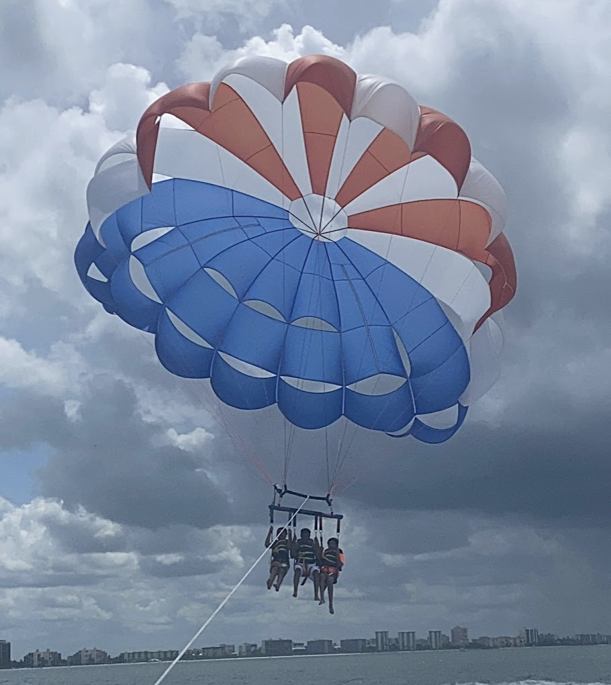

Aditi Kanujia
Fun FactsThrill Addiction
Some things that a lot of people don't know about me is that I love doing thrill related activites. So usually when I go travelling with my family I try to do one cool adventure sport or thrill related activity. Some of the cool things I have done in the past includes scuba diving, jet skiing, parasailling and more. The next thing on my bucket list is skiing and snowboarding :)
Culture
I am not the most religious person however, I am super connected to my culture and love to celebrate that. When I was younger up until high school I particpated in bollywood dance and did several performances for popular religious events. I also go every year to celebrate Diwali, Garba, and Holi with my friends and family. I also occasionally enjoy binging bollywood movies and music. Living in india I am also somewhat fluent in speaking and understanding hindi which further connects me back to my homeland!

Other Random Things
Some other random things that might be cool to know is that when I was younger I loved music and learned to play the piano, clarinet, and was in choir. I also loved sports therefore, I joined a swimming team and taekwando for a brief period of my life before fully commiting to tennis.